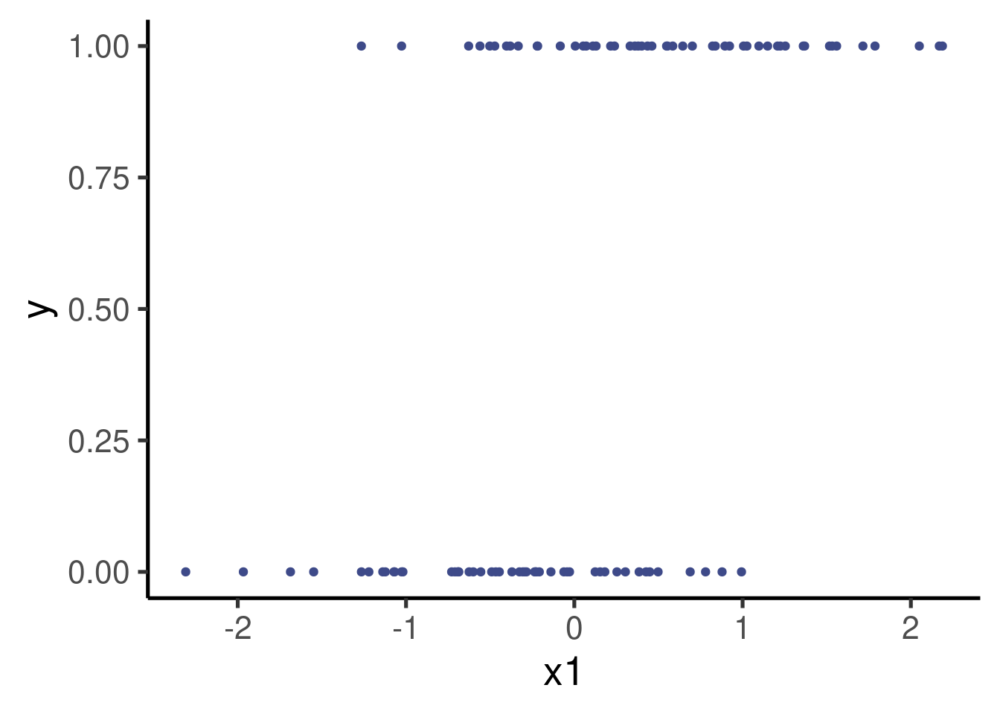
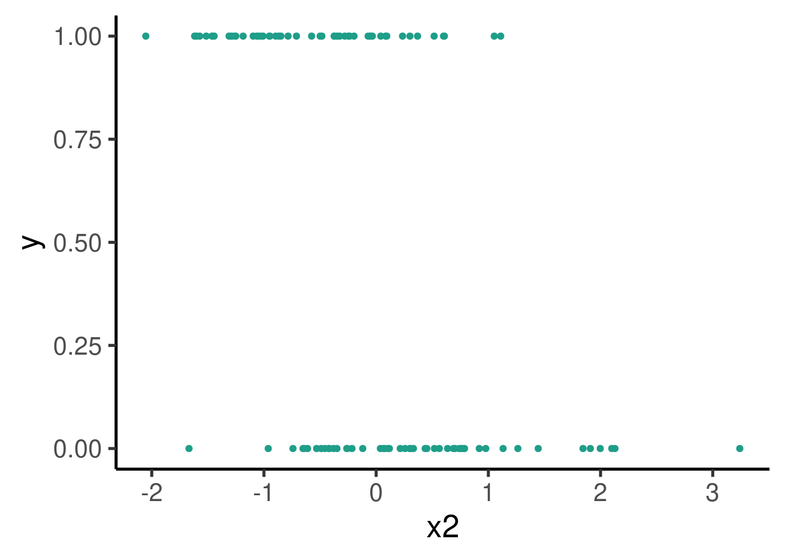
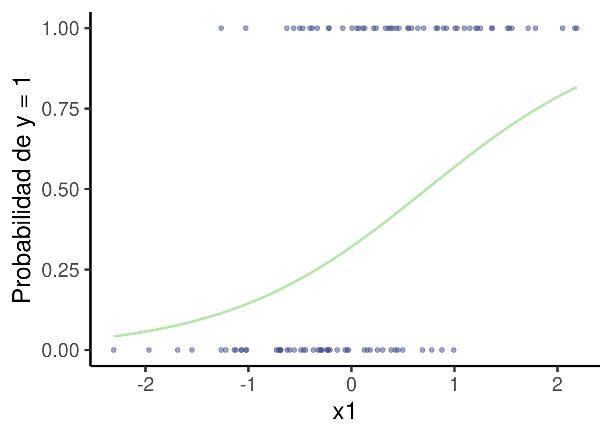
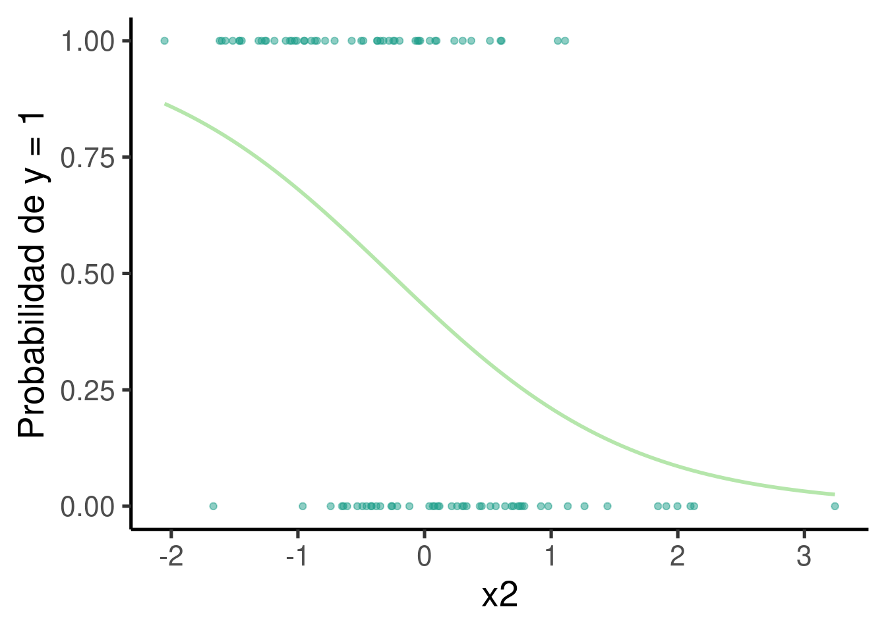
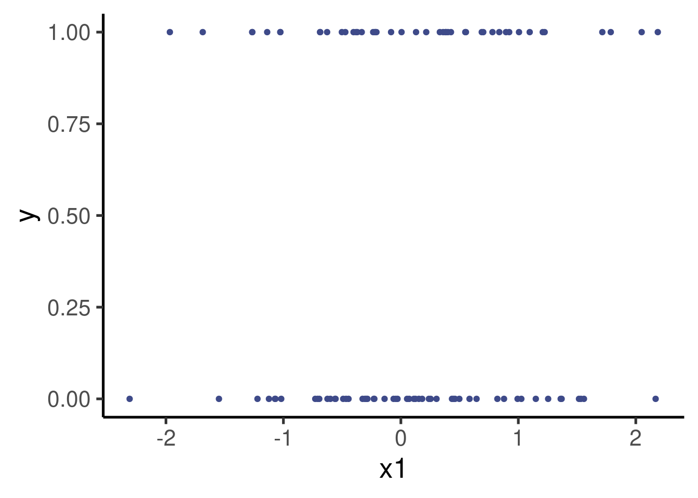

Código
# instalar/cargar paquetes
sketchy::load_packages(
c("ggplot2",
"viridis",
"lmerTest",
"sjPlot")
)
Expandir la regresión lineal a otros tipos de variable respuesta
Introducir modelos que predicen variables categóricas
Paquetes a utilizar en este manual:
# instalar/cargar paquetes
sketchy::load_packages(
c("ggplot2",
"viridis",
"lmerTest",
"sjPlot")
)La regresión logística es una técnica utilizada cuando la variable respuesta es binaria (por ejemplo, éxito/fracaso, sí/no). En lugar de modelar directamente la variable respuesta, la regresión logística modela la probabilidad de que ocurra un evento (es decir, P(Y=1)).
La función de enlace más comúnmente utilizada en la regresión logística es la función logit, que transforma las probabilidades en el rango [0,1] a valores en el rango (−∞,∞), permitiendo que la combinación lineal de predictores pueda tomar cualquier valor real.
Primero, vamos a simular un conjunto de datos donde la respuesta sea binaria. En este ejemplo, supongamos que tenemos dos variables predictoras: x1 y x2.
# Simulación de datos
set.seed(123) # Para reproducibilidad
n <- 100 # Número de observaciones
x1 <- rnorm(n) # Predictor 1: variable normal
x2 <- rnorm(n) # Predictor 2: variable normal
# Coeficientes reales para la simulación
b0 <- -0.5 # Intercepto
b1 <- 4 # Coeficiente de x1
b2 <- -3 # Coeficiente de x2
# Calcular la probabilidad usando la función logística
logit_p <- b0 + b1 * x1 + b2 * x2
p <- 1 / (1 + exp(-logit_p))
# Generar la respuesta binaria
y <- rbinom(n, 1, p)
# Crear un data frame
datos <- data.frame(x1 = x1, x2 = x2, y = y)
# explorar datos
head(datos)| x1 | x2 | y |
|---|---|---|
| -0.56048 | -0.71041 | 1 |
| -0.23018 | 0.25688 | 0 |
| 1.55871 | -0.24669 | 1 |
| 0.07051 | -0.34754 | 1 |
| 0.12929 | -0.95162 | 1 |
| 1.71506 | -0.04503 | 1 |
Estos graficos nos muestran las relaciones entre x1, x2 y Y:
# graficar
ggplot(datos, aes(x = x1, y = y)) +
geom_point(color = "#3E4A89FF")
ggplot(datos, aes(x = x2, y = y)) +
geom_point(color = "#1F9E89FF")
Para ajustar el modelo de regresión logística en R, utilizamos la función glm() con el argumento family = binomial. glm() es una función de R básico para ajustar modelos lineales generalizados.
# Ajustar el modelo de regresión logística
modelo_log <- glm(y ~ x1 + x2, data = datos, family = binomial)
# Resumen del modelo
summary(modelo_log)
Call:
glm(formula = y ~ x1 + x2, family = binomial, data = datos)
Coefficients:
Estimate Std. Error z value Pr(>|z|)
(Intercept) -0.501 0.352 -1.42 0.15
x1 3.344 0.789 4.24 2.2e-05 ***
x2 -3.077 0.701 -4.39 1.1e-05 ***
---
Signif. codes: 0 '***' 0.001 '**' 0.01 '*' 0.05 '.' 0.1 ' ' 1
(Dispersion parameter for binomial family taken to be 1)
Null deviance: 138.589 on 99 degrees of freedom
Residual deviance: 58.649 on 97 degrees of freedom
AIC: 64.65
Number of Fisher Scoring iterations: 7Ahora podemos graficar los datos crudos junto a la curva de mejor ajuste. Para esto debemos estimar los valores predichos por el modelo primero:
# Crear un nuevo data frame con las predicciones para x1
nuevos_datos <-
expand.grid(
x1 = seq(min(datos$x1), max(datos$x1), length.out = 100),
x2 = seq(min(datos$x2), max(datos$x2), length.out = 100)
)
# anadir predicciones
nuevos_datos$pred_prob <-
predict(object = modelo_log,
newdata = nuevos_datos,
type = "response")
# Crear el gráfico de puntos y la curva de mejor ajuste para x1
ggplot(datos, aes(x = x1, y = y)) +
geom_point(alpha = 0.5, color = "#3E4A89FF") + # Datos crudos
geom_smooth(data = nuevos_datos, aes(y = pred_prob, x = x1), method = "glm", method.args = list(family = "binomial"), se = FALSE) +
labs(y = "Probabilidad de y = 1") `geom_smooth()` using formula = 'y ~ x'Warning in eval(family$initialize): non-integer #successes in a binomial glm!
# Crear el gráfico de puntos y la curva de mejor ajuste para x2
ggplot(datos, aes(x = x2, y = y)) +
geom_point(alpha = 0.5, color = "#1F9E89FF") + # Datos crudos
geom_smooth(data = nuevos_datos, aes(y = pred_prob, x = x2), method = "glm", method.args = list(family = "binomial"), se = FALSE) +
labs(y = "Probabilidad de y = 1") `geom_smooth()` using formula = 'y ~ x'Warning in eval(family$initialize): non-integer #successes in a binomial glm!
En el modelo de regresión logística, los coeficientes estan dados como el logaritmo de los chances (log-odds) de que Y = 1:
# Obtener los log-chances
coefs <- coef(modelo_log)
coefs(Intercept) x1 x2
-0.50108 3.34413 -3.07659 Los chances (“odds”, a veces traducido como probabilidades) se definen como la razón entre la probabilidad de la ocurrencia de un evento y la probabilidad de que ese evento no ocurra:
\[ \text{Odds} = \frac{\text{Probabilidad de éxito}}{\text{Probabilidad de fracaso}} = \frac{P(E)}{1 - P(E)} \]
El ‘log-odds’ es simplemente el logaritmo natural de ese cociente:
\[ \text{Log-Odds} = \log(\text{Odds}) = \log\left(\frac{P(E)}{1 - P(E)}\right) \]
Esto significa que por cada aumento de una unidad de x1, los ‘log-odds’ de que Y = 1 aumentan en 3.34.
Pueden interpretarse mas facilmente en términos de la razón de los chances (odds ratio). Para obtener las razones de chances, simplemente tomamos el exponente de los coeficientes:
# Obtener las razones de probabilidades
exp_coefs <- exp(coefs)
exp_coefs(Intercept) x1 x2
0.605874 28.335874 0.046116 Esto quiere decir que el chance de Y=1 aumenta en 28.34 por cada aumento de una unidad de x1. Esto puede ser aun mas intuitivo si lo interpretamos como un porcentaje: un aumento de una unidad de x1 esta asociado con un aumento de aproximadamente 2734% en los chances de que Y=1.
Estos modelos pueden ajustarse a estructuras mas complejas de forma similar a los modelos lineales. Por ejemplo en el siguiente modelo tenemos 2 variables predictoras y su interaccion:
# Simulación de datos
set.seed(123) # Para reproducibilidad
n <- 100 # Número de observaciones
x1 <- rnorm(n) # Predictor 1: variable normal
x2 <- rnorm(n) # Predictor 2: variable normal
# Coeficientes reales para la simulación
b0 <- -0.5 # Intercepto
b1 <- 1.5 # Coeficiente de x1
b2 <- -2 # Coeficiente de x2
b3 <- 3 # interaccion
# Calcular la probabilidad usando la función logística
logit_p <- b0 + b1 * x1 + b2 * x2 + b3 * x1 * x2
p <- 1 / (1 + exp(-logit_p))
# Generar la respuesta binaria
y <- rbinom(n, 1, p)
# Crear un data frame
datos <- data.frame(x1 = x1, x2 = x2, y = y)
# explorar datos
head(datos)| x1 | x2 | y |
|---|---|---|
| -0.56048 | -0.71041 | 0 |
| -0.23018 | 0.25688 | 0 |
| 1.55871 | -0.24669 | 0 |
| 0.07051 | -0.34754 | 0 |
| 0.12929 | -0.95162 | 1 |
| 1.71506 | -0.04503 | 1 |
Estos graficos nos muestran las relaciones entre x1, x2 y Y:
# graficar
ggplot(datos, aes(x = x1, y = y)) +
geom_point(color = "#3E4A89FF")
ggplot(datos, aes(x = x2, y = y)) +
geom_point(color = "#1F9E89FF")
… y ahora ajustamos el modelo de regresión logística conteniendo una interacción entre x1 y x2:
# Ajustar el modelo de regresión logística
modelo_log <- glm(y ~ x1 * x2, data = datos, family = binomial)
# Resumen del modelo
summary(modelo_log)
Call:
glm(formula = y ~ x1 * x2, family = binomial, data = datos)
Coefficients:
Estimate Std. Error z value Pr(>|z|)
(Intercept) -0.888 0.354 -2.51 0.01212 *
x1 1.579 0.551 2.86 0.00418 **
x2 -2.092 0.575 -3.64 0.00028 ***
x1:x2 4.002 0.959 4.17 3e-05 ***
---
Signif. codes: 0 '***' 0.001 '**' 0.01 '*' 0.05 '.' 0.1 ' ' 1
(Dispersion parameter for binomial family taken to be 1)
Null deviance: 137.989 on 99 degrees of freedom
Residual deviance: 83.028 on 96 degrees of freedom
AIC: 91.03
Number of Fisher Scoring iterations: 7R version 4.4.1 (2024-06-14)
Platform: x86_64-pc-linux-gnu
Running under: Ubuntu 22.04.4 LTS
Matrix products: default
BLAS: /usr/lib/x86_64-linux-gnu/blas/libblas.so.3.10.0
LAPACK: /usr/lib/x86_64-linux-gnu/lapack/liblapack.so.3.10.0
locale:
[1] LC_CTYPE=en_US.UTF-8 LC_NUMERIC=C
[3] LC_TIME=es_CR.UTF-8 LC_COLLATE=en_US.UTF-8
[5] LC_MONETARY=es_CR.UTF-8 LC_MESSAGES=en_US.UTF-8
[7] LC_PAPER=es_CR.UTF-8 LC_NAME=C
[9] LC_ADDRESS=C LC_TELEPHONE=C
[11] LC_MEASUREMENT=es_CR.UTF-8 LC_IDENTIFICATION=C
time zone: America/Costa_Rica
tzcode source: system (glibc)
attached base packages:
[1] stats graphics grDevices utils datasets methods base
other attached packages:
[1] car_3.1-2 carData_3.0-5 sjPlot_2.8.16 lmerTest_3.1-3
[5] lme4_1.1-35.5 Matrix_1.7-0 viridis_0.6.5 viridisLite_0.4.2
[9] ggplot2_3.5.1 knitr_1.48
loaded via a namespace (and not attached):
[1] gtable_0.3.5 xfun_0.47 htmlwidgets_1.6.4
[4] remotes_2.5.0 insight_0.20.2 lattice_0.22-6
[7] numDeriv_2016.8-1.1 vctrs_0.6.5 tools_4.4.1
[10] sjstats_0.19.0 generics_0.1.3 datawizard_0.12.1
[13] tibble_3.2.1 fansi_1.0.6 pkgconfig_2.0.3
[16] ggeffects_1.7.0 lifecycle_1.0.4 compiler_4.4.1
[19] farver_2.1.2 stringr_1.5.1 sjmisc_2.8.10
[22] munsell_0.5.1 sketchy_1.0.3 htmltools_0.5.8.1
[25] yaml_2.3.10 pillar_1.9.0 nloptr_2.1.1
[28] crayon_1.5.3 tidyr_1.3.1 MASS_7.3-61
[31] boot_1.3-30 abind_1.4-5 nlme_3.1-165
[34] tidyselect_1.2.1 sjlabelled_1.2.0 packrat_0.9.2
[37] digest_0.6.37 performance_0.12.2 stringi_1.8.4
[40] dplyr_1.1.4 purrr_1.0.2 labeling_0.4.3
[43] splines_4.4.1 fastmap_1.2.0 grid_4.4.1
[46] colorspace_2.1-1 cli_3.6.3 magrittr_2.0.3
[49] utf8_1.2.4 withr_3.0.1 scales_1.3.0
[52] rmarkdown_2.28 gridExtra_2.3 evaluate_0.24.0
[55] mgcv_1.9-1 rlang_1.1.4 Rcpp_1.0.13
[58] glue_1.7.0 xaringanExtra_0.8.0 rstudioapi_0.16.0
[61] minqa_1.2.7 jsonlite_1.8.8 R6_2.5.1